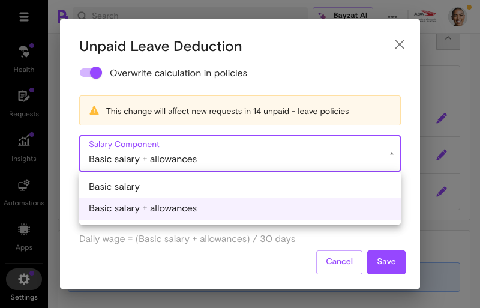
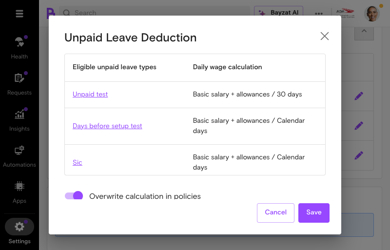
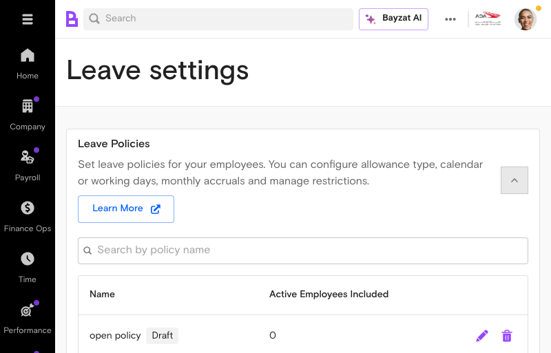
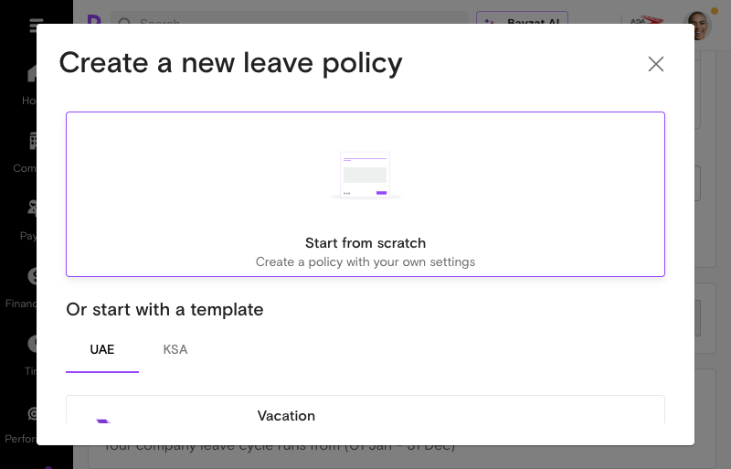

Configure flexible daily wage calculations for salary proration, leave encashment, and unpaid leave deductions
What is Daily Wage Calculator?
Overview
The Daily Wage Calculator is a flexible and customizable method for calculating daily wages, including salary proration, leave encashment, and unpaid leave deductions. This feature enables HR teams and payroll administrators to accurately determine employee compensation adjustments based on actual days worked and leave taken.
Accessing the Daily Wage Calculator from Settings > Payroll menu
Who Uses This Feature?
User Role
What They Do
Value Proposition
Super Admins
Configure organization-wide daily wage calculation methods and salary component settings
Set up compliant calculation rules once and apply them consistently across the organization—ensuring labor law compliance without manual policy enforcement
Payroll Table Managers
Manage payroll calculations and apply daily wage settings to employee groups
Process accurate salary deductions and adjustments automatically—eliminating spreadsheet calculations and reducing payroll disputes
Transaction Processors
Execute payroll transactions using configured daily wage calculations
Apply pre-configured calculation rules with confidence—without needing to manually verify formulas or worry about calculation errors
HR Personnel
Manage employee leave records and coordinate with payroll for salary adjustments
Connect leave management directly to accurate salary calculations—eliminating manual handoffs and ensuring employees are paid correctly
Key Benefits
Flexible calculation methods that align with your company's labor law requirements
Automatic daily wage calculations for unpaid leave deductions and salary adjustments
Customizable salary components (Basic salary or Basic salary + allowances)
Support for multiple calculation bases including calendar days, working days, and custom days
Accurate end-of-service calculations based on configured leave encashment policies
Reduced manual calculation errors through automated daily rate determination
Product Foundation Overview
How Daily Wage Calculator Fits
Daily Wage Calculator is a configuration setting that determines how daily rates are computed for payroll scenarios. It provides the calculation base for salary proration, leave encashment, and unpaid leave deductions.
Salary proration amounts align with actual days worked
No calculation errors or discrepancies in monthly payroll processing
Pre-Implementation
Prerequisites Table
Before configuring daily wage calculations and leave deductions, ensure your organization meets these requirements:
Requirement
Description
Status
User Role
Super admin or Payroll table manager access
Required
Payroll Module Access
Active Payroll module enabled in your Bayzat account
Required
Employee Records
Employee master data with salary information configured
Required
Leave Policies
Leave policy framework established in the system
Required
Public Holiday Calendar
Company-specific public holiday calendar configured
Required
Salary Components
Basic salary and allowance components defined in payroll settings
Required
Required Permissions and Roles
The Daily Wage Calculator is accessible to Superadmin, Payroll table managers, and transaction processors. Ensure your user account has one of these roles:
Super Admin - Full access to all payroll settings and configurations
Payroll Manager - Access to payroll settings and daily wage calculation configuration
Transaction Processor - Access to process payroll transactions using configured daily wage calculations
System Requirements
Your Bayzat account must have the following systems active and configured:
Payroll module enabled and initialized
Leave Management system configured with leave types
Employee database with current salary information
Public holiday calendar for your operating country (UAE/KSA)
Active payroll periods or pay cycles defined
Feature Discovery
How to Access
Access Daily Wage Calculator from Settings → Payroll → Daily Wage Calculation. This is the central location for configuring how daily wages are calculated across your organization.
Navigation Path
Follow these steps to navigate to the Daily Wage Calculator:
Log in to your Bayzat account as Super Admin or Payroll Manager
Click the Settings icon (gear icon) in the main navigation
Select Payroll from the settings menu
Choose Daily Wage Calculation from the payroll options
Navigation Path - Accessing the Payroll settings from the main menu
Interface Overview
The Daily Wage Calculator interface displays a configuration table with three service types, each with independent settings. This per-service structure allows different calculation methods for different payroll scenarios:
Service Configuration Table
The interface presents a table with columns for Service, Daily Wage Calculation (showing the current formula), and an Edit button. Three service types are configured independently: Salary proration, EOS leave encashment, and Unpaid leave deduction.
Calculation Base Selection
Select calculation base (calendar days, working days, or custom days). Each service type can have its own calculation base configured independently.
Salary Components
Choose salary components to factor into calculations: Basic salary or Basic salary + allowances. The formula displays dynamically (e.g., "Basic salary + allowances / 30 days").
Interface Overview - Calculation basis selection options available in the Daily Wage Calculator
Setup Process
Initial Configuration
The Daily Wage Calculator requires initial setup to establish how your organization calculates daily wages. Most UAE and KSA companies use 30 custom days to align with labor law. This initial configuration affects salary proration, leave encashment, and unpaid leave deductions across your entire payroll system.
Note: Changes to daily wage calculation settings will affect all active (unpaid) amounts in the payroll table. Plan configuration changes during periods when no payroll is in process.
Step-by-Step Setup
1
Navigate to Daily Wage Calculation Settings
From the main Settings menu, select Payroll, then expand the Daily Wage Calculation section. You will see a configuration table displaying three service types (Salary proration, EOS leave encashment, Unpaid leave deduction), each showing its current daily wage formula and an edit button (pencil icon) to configure settings.
Step 1 - The Daily Wage Calculation configuration interface
2
Select Calculation Base
Select calculation base (calendar days, working days, or custom days). Your choice determines the denominator for daily wage calculations:
Calendar Days: Uses the actual number of days in the month (28-31 days)
Working Days: Uses only business days, excluding weekends and public holidays
Custom Days: Uses a fixed number (typically 30 days for UAE/KSA compliance)
Step 2 - Select your calculation base from the available options
3
Choose Salary Components
Choose salary components to factor into calculations. Select which salary elements are included in daily wage calculations from the Salary Component dropdown:
Basic salary: Uses only the employee's basic salary
Basic salary + allowances: Includes basic salary and all allowances

Step 3 - Select which salary components to include in calculations
4
Configure Public Holiday Handling
Can exclude weekends and public holidays. If you selected Working Days as your calculation base, ensure your public holiday calendar is properly configured. Public holidays are deducted from working days.
5
Save Configuration Changes
Click the Save button to apply your daily wage calculation settings. The system will confirm the changes and apply them to all future payroll calculations.
6
Handle Existing Transactions (If Applicable)
When payroll month is open, super admin must reject existing prorated salary transactions before saving new proration settings. If you have active payroll in process, you may need to reject and resave affected transactions.
Verification Steps
After completing the setup, verify your configuration is correct:
Confirm the calculation base is displayed correctly on the Daily Wage Calculation page
Check that salary components selected match your organization's payroll policy
Review a sample payroll transaction to ensure daily wage calculations are accurate
Verify that any existing prorated salary transactions have been updated if you made changes during an open payroll period
Test with a small group of employees before applying to full payroll
Important: Configuration changes affect all payroll calculations immediately. Ensure you have tested changes thoroughly and communicated any impacts to your payroll team before applying to live payroll.
Feature Usage
Common Workflows
The Daily Wage Calculator supports several key payroll workflows. Once configured, it automatically calculates daily wages for multiple scenarios:
Unpaid Leave Deductions
Calculate and manage unpaid leave deductions on a daily basis for employee payroll. When an employee takes unpaid leave, the system automatically calculates the daily deduction based on your configured calculation base. The configuration dialog displays all eligible unpaid leave types with their individual calculations, and includes an "Overwrite calculation in policies" toggle to apply settings across multiple leave policies.
Salary Proration
Adjust and calculate an employee's salary proportionally based on the actual days worked, affecting their first salary and end-of-service settlement. This applies when employees join mid-month or leave before month-end.
Leave Encashment
Configure and customize leave encashment policies for end-of-service calculations. The daily wage rate is used to calculate the value of unused leave at employee separation. The EOS leave encashment configuration displays all eligible paid leave types with their individual daily wage calculations. The "Overwrite calculation in policies" toggle allows bulk updates across multiple leave policies simultaneously.
Usage Examples
Example 1: Processing Unpaid Leave
To calculate and deduct daily pay for employees taking unpaid leave by determining the appropriate salary reduction based on the number of working or calendar days:
Employee submits unpaid leave request for 2 days
HR approves the unpaid leave request
System calculates daily pay rate using your configured calculation base (e.g., Basic Salary ÷ 30 days = Daily Rate)
Deduction is automatically applied: Daily Rate × 2 days = Total Deduction
Deduction appears in the payroll table and is reflected in the employee's salary

Usage Example - Unpaid leave deduction configuration interface
Example 2: Configuring Unpaid Leave Policy
When creating a new leave policy for unpaid leave:
Navigate to Settings > Leaves > Leave Policies
Click Add New Policy
Select Unpaid Leave as the leave type
Choose calculation method: Basic Only or Basic + Allowances
Select day calculation type: Calendar Days, Working Days, or Custom Days
Save the policy

Usage Example - Leave policies table with existing configurations

Usage Example - Creating a new leave policyUsage Example - Configuring leave policy settings
Example 3: End-of-Service Leave Encashment
Configure and customize leave encashment policies for end-of-service calculations:
Navigate to Settings > Payroll > End of Service Eligibility
Select salary components (Basic Only or Basic + Allowances)
Choose calculation method (Calendar Days, Working Days, or Custom Days)
Configure which leave types are eligible for encashment
Save configuration
Usage Example - End-of-service eligibility configurationUsage Example - Configuring specific leave types for end-of-service encashment
Best Practices
Align with Labor Law:Most UAE and KSA companies use 30 custom days to align with labor law. Ensure your calculation base matches your country's labor regulations.
Consistent Configuration: Use the same calculation base across all payroll operations (salary proration, leave encashment, and unpaid leave deductions) to ensure consistency.
Public Holiday Management:Public holidays must be considered and subtracted from working days when calculating daily pay. Keep your public holiday calendar current.
Test Before Implementation: Test your daily wage calculation configuration with a sample of employees before applying to full payroll.
Document Your Settings: Keep records of your calculation base, salary components, and any special configurations for audit and compliance purposes.
Monitor Month-End Processing:When payroll month is open and prorated salary transactions exist, super admin must manually reject and resave transactions if you need to change settings.
Review Calculation Variations:Calculation varies depending on month length (e.g., 31 days in January, 28 days in February), and different calculation methods can impact final wage calculations. Review payroll reports monthly to ensure accuracy.
Best Practices - Understanding the daily wage calculation formula
Leave Pay Rate — How Leave Types Control Daily Wage Calculations
Understanding the Connection
The Leave pay rate section in leave policy configuration is the critical junction where Daily Wage Calculator settings are applied. This section determines whether and how payroll deductions are calculated when employees take leave.
Key Concept: The Daily Wage Calculator is only invoked when there is an unpaid component to the leave. For fully paid leave, no daily wage calculation is needed because no deduction occurs.
When Does Daily Wage Calculator Apply?
Leave Type
Daily Wage Calculator Used?
Business Logic
Paid leave
No
Employee receives 100% salary — no deduction to calculate
Partially paid leave
Yes
Calculates deduction for the unpaid percentage of salary
Unpaid leave
Yes
Calculates full deduction for all leave days taken
Paid Leave tab - No daily wage formula section appears
What Appears in the Interface
"Paid leave" button selected with checkmark
NO daily wage formula section - it is completely hidden
"Leave salary settings" section appears instead
Business Logic Explained
When an employee takes Paid leave:
Compensation: Employee receives 100% of their regular salary for the leave period
Payroll Impact:No deduction is created because the employee is fully compensated
Daily Wage Relevance: The Daily Wage Calculator is NOT used — there is no unpaid portion requiring calculation
What Gets Recorded: Leave days are tracked for balance purposes only; no monetary adjustment appears in payroll table
Additional Option: Leave Salary
When Paid leave is selected, a "Leave salary settings" section appears with an "Enable leave salary" toggle. This is for UAE labor law compliance where employees may receive an additional payment before their annual leave (a common practice in the region).
Example Scenario
Scenario: Employee takes 5 days of annual leave (Paid leave policy).
Result: They receive their normal monthly salary with no deductions. The 5 leave days are deducted from their balance for tracking purposes only. No deduction line item appears in the payroll table.
Option 2: Partially Paid Leave
Partially Paid Leave tab - Shows percentage field and disabled daily wage formula
What Appears in the Interface
"Partially paid leave" button selected with checkmark
"Percentage paid" field (0-100%) — this is the key control
Daily wage formula section with disabled/greyed-out fields
Question: "How should the daily wage be calculated for unpaid percentage of leaves?"
Alert message about automatic deduction adjustment
Business Logic Explained
When an employee takes Partially paid leave:
Compensation: Employee receives a specified percentage of their daily wage for each leave day
The Percentage Field: Determines the split between paid and unpaid portions
Set to 75% = employee receives 75% pay, 25% is deducted
Set to 50% = employee receives 50% pay, 50% is deducted
Set to 25% = employee receives 25% pay, 75% is deducted
Daily Wage Relevance: The Daily Wage Calculator determines the value of the UNPAID PORTION
Formula Applied:Daily Wage × (100% - Percentage Paid) × Number of Leave Days = Deduction
Important: Unpaid leave is conceptually equivalent to Partially paid leave at 0%. The only difference is the UI doesn't show a percentage field because the value is always 0%.
Why Are Formula Fields Disabled at Policy Level?
When configuring leave policies, you'll notice the daily wage formula fields (Salary component, Day calculation type, Divisor) are greyed out and disabled. This is intentional.
Configuration Hierarchy
The Daily Wage Calculator uses a three-level configuration hierarchy:
Level
Location
What You Can Control
Level 1: Global
Settings → Payroll → Daily Wage Calculation
Salary component, day calculation type, divisor value
Level 2: Service
Same page, per-service rows
Per-service formula (Salary proration, EOS, Unpaid leave)
Level 3: Policy
Settings → Leaves → Leave Policies
Leave type ONLY (Paid/Partially paid/Unpaid)
Key restriction: At Level 3 (policy level), you can only choose the leave type. You CANNOT edit the daily wage formula — it is inherited from Level 1 and displayed as read-only.
Visual Indicators of This Restriction
Greyed-out dropdown fields
Disabled text inputs
Message: "Configured in daily wage calculation setting"
Clickable link to navigate to the global settings
Why This Design?
This centralized approach ensures:
Organizational consistency: All leave policies use the same daily wage formula
Reduced errors: No risk of individual policies having conflicting calculation methods
Easier auditing: One place to verify and document calculation settings
Simplified maintenance: Changes to global settings automatically apply to all policies
Conditional Pay Rate Option
Above the three leave type tabs, there's a toggle:
Toggle: "Set conditional pay rate based on employee's leave allowance used"
Purpose: Allows different pay rates based on how much leave the employee has already taken in the cycle.
Example Use Case
A company might configure a policy where:
First 10 days of leave: Fully paid (100%)
Days 11-15: Partially paid (50%)
Days 16 and beyond: Unpaid (0%)
This enables progressive deduction policies where employees exhaust their paid allowance before moving to partially paid or unpaid leave.
Summary: Leave Pay Rate Impact on Daily Wage
Selection
Daily Wage Formula
Deduction Created
Payroll Table Impact
Paid leave
Not shown
None
No deduction line
Partially paid (X%)
Shown (disabled)
Daily Rate × (100-X)% × Days
Deduction for unpaid %
Unpaid leave
Shown (disabled)
Daily Rate × Days
Full deduction
Feature Maintenance
Ongoing Maintenance Tasks
The Daily Wage Calculator and related payroll features require regular maintenance to ensure accurate calculations and compliance with labor regulations. Key maintenance activities include:
Reviewing and updating public holiday calendars annually
Validating salary component configurations after organizational changes
Monitoring payroll calculations for accuracy and consistency
Updating leave policies to reflect changes in company leave entitlements
Reconciling prorated salary transactions when payroll settings change
Review Schedule
Establish a regular review schedule to maintain the integrity of wage calculations:
Task
Frequency
Responsibility
Public holiday calendar review
Annually (before new calendar year)
Super Admin / Payroll Manager
Salary component validation
Quarterly or after organizational changes
Payroll Administrator
Leave policy audit
Annually or when policies change
HR Manager / Super Admin
Calculation method verification
Semi-annually
Payroll Manager
End-of-service configuration review
Annually before year-end
Super Admin
Best Practices
Document all configuration changes with dates and reasons for audit trails
Test calculation changes in a non-live environment before applying to active payroll
Maintain backup copies of calculation settings before making updates
Communicate any changes to leave policies or calculation methods to affected employees
Review rejected prorated salary transactions promptly to prevent payroll delays
Ensure public holiday calendars align with UAE labor law requirements
Business Rules & Limitations
Core Business Rules
The Daily Wage Calculator operates on three primary calculation bases: calendar days, working days, or custom days. Understanding these rules ensures accurate payroll processing:
Rule
Description
Impact
Daily pay calculation formula
Daily pay is calculated by dividing total salary by the number of actual working days
Determines deduction amounts for unpaid leave and salary proration
Public holiday deduction
Public holidays must be deducted from working days when calculating daily pay
Reduces the denominator in daily wage calculations, increasing daily rate
Salary component selection
Can choose between Basic salary or Basic salary + allowances for calculations
Affects the numerator in daily wage calculations; impacts leave encashment and unpaid leave deductions
Per-service configuration
Daily wage settings are configured independently for each service type: Salary proration, EOS leave encashment, and Unpaid leave deduction
Allows different calculation methods for different payroll scenarios; each service displays its own formula (e.g., "Basic salary + allowances / 30 days")
Calculation base consistency
Changes to calculation basis affect all active (unpaid) amounts in the payroll table
Requires manual rejection and resaving of prorated salary transactions when payroll month is open
Leave encashment eligibility
Super admins can configure which specific leave types are eligible for end-of-service encashment
Determines which leave balances are converted to cash at employee separation
Unpaid leave daily deduction
Unpaid leave deductions must be calculated daily and set off against the employee's monthly pay
Reduces monthly salary proportionally based on unpaid leave days taken
UAE/KSA labor law alignment
Most UAE and KSA companies use 30 custom days to align with labor law requirements
Ensures compliance with local labor regulations and standard industry practice
System Constraints
Calculation varies depending on month length (e.g., 31 days in January, 28 days in February), which can impact final wage calculations
When payroll month is open and prorated salary transactions exist, super admin must manually reject and resave transactions before applying new proration settings
Daily wage calculations are applied retroactively to all affected leave types and salary adjustments
Configuration changes cannot be applied selectively to individual employees; they affect all employees in the organization
Public holiday calendars must be maintained separately and updated before they impact calculations
The "Overwrite calculation in policies" toggle, when enabled, applies configuration changes across all eligible leave policies simultaneously. Use with caution as this can affect numerous policies at once
Individual leave types within EOS leave encashment may have different calculation methods (e.g., some using Calendar days, others using Working days) - review each policy's settings before making bulk changes
Compliance Requirements
Ensure all calculations comply with UAE Federal Labor Law No. 8 of 1980 (or applicable local labor laws)
Maintain accurate records of all calculation method changes for audit purposes
Verify that leave encashment policies comply with local gratuity and end-of-service regulations
Document the rationale for selecting specific calculation bases (calendar days vs. working days)
Ensure salary components used in calculations are consistently defined across the payroll system
Validated Interface Features
The following features have been validated through interface testing:
Feature
Status
Notes
Impact messaging for policy changes
Confirmed Working
EOS leave Encashment dialog displays "This change will affect X eligible paid leave - leave policies" when the Overwrite toggle is enabled
Decimal precision in calculations
Confirmed Working
All monetary values display correct 2 decimal place formatting (e.g., 36,083.33, 15,250.00)
Remarks column in payroll detail
Present
Shows transaction dates and pay periods (e.g., "23RD DEC - 23RD DEC", "PAY PERIOD - OCTOBER, 2025")
Month length documentation
Not Available in UI
No explicit documentation in the Calendar days option about handling varying month lengths (28-31 days)
Transaction-level warnings
Requires Active Transactions
Warnings for open payroll with existing transactions only appear when such transactions exist
Troubleshooting & Edge Cases
Common Issues
Issue
Cause
Resolution
Incorrect daily wage calculation
Public holidays not properly deducted from working days, or wrong salary component selected
Verify public holiday calendar is current and salary component selection (Basic Only vs. Basic + Allowances) matches policy
Prorated salary transactions not updating
Payroll month is open with existing prorated transactions; system requires manual rejection before new settings apply
Reject existing prorated salary transactions, then resave new proration settings
Leave encashment not calculated at end-of-service
Leave type not configured as eligible for encashment in End of Service settings
Access Settings > Payroll > End of Service Eligibility and configure the specific leave type for encashment
Unpaid leave deductions not appearing on payroll
Leave policy not configured with unpaid leave deduction calculation method
Navigate to Settings > Leaves > Leave Policies, select the policy, and configure unpaid leave deduction settings
Discrepancy between expected and actual daily rate
Calculation base mismatch (calendar days vs. working days) or month-length variation not accounted for
Confirm calculation base selection and verify the number of working days for the specific month
Configuration changes affecting wrong employees
Changes to calculation settings apply organization-wide, not to individual employees
Understand that all configuration changes affect all employees; create separate leave policies if different calculation methods are needed
Edge Cases
Important:Calculation varies depending on month length (e.g., 31 days in January, 28 days in February). When using calendar days as the calculation base, ensure your system accounts for these variations to prevent calculation errors.
February calculations: When using calendar days, February has 28 or 29 days instead of 30, which increases the daily wage rate. Verify that your payroll system correctly handles this variation.
Mid-month policy changes: If leave policies or calculation methods change mid-month, determine whether changes apply retroactively to the entire month or only to future dates.
Employees with partial months:Salary proration adjusts employee compensation proportionally based on actual days worked, which is critical for new hires and separated employees.
Multiple leave types with different calculation methods: If your organization uses different calculation bases for different leave types, ensure each leave policy is configured separately to avoid calculation conflicts.
Public holiday overlapping with leave: When an employee takes unpaid leave that includes a public holiday, clarify whether the public holiday is deducted from the unpaid leave balance or calculated separately.
Payroll month closure with pending transactions:When payroll month is open, super admin must reject existing prorated salary transactions before saving new proration settings. Ensure this is completed before closing the payroll month.
Resolution Steps
1
Identify the Issue
Determine which calculation is incorrect by reviewing the payroll table and comparing expected vs. actual amounts. Note the specific employee, leave type, or salary component affected.
2
Review Configuration Settings
Navigate to Settings > Payroll and verify the Daily Wage Calculation base, salary component selection, and public holiday calendar are correct and current.
3
Check Leave Policy Configuration
For leave-related issues, access Settings > Leaves > Leave Policies and confirm the specific leave type is configured with the correct calculation method and day type (calendar, working, or custom days).
4
Verify Public Holiday Calendar
Ensure the public holiday calendar is up-to-date and includes all applicable holidays for the calculation period. Public holidays must be deducted from working day counts.
5
Reject and Resave if Needed
If payroll month is open and configuration changes are required, reject existing prorated salary transactions before saving new settings to ensure calculations update correctly.
6
Validate Corrected Calculations
After making corrections, review the payroll table to confirm the daily wage calculations now match expected amounts. Verify the change applies to all affected employees.
Support Resources
Frequently Asked Questions
How is the daily wage calculated?
Daily wage is calculated by dividing the selected salary component (Basic Salary or Basic + Allowances) by the configured number of days (calendar days, working days, or custom days). The formula is: Daily Wage = Salary Component ÷ Days in Calculation Base.
What's the difference between calendar days and working days?
Calendar days uses 30 or 365 days regardless of actual work schedule. Working days uses the actual number of scheduled work days per month (typically 22-26 days). Working days results in a higher daily rate since the divisor is smaller.
Can I use different calculation methods for different purposes?
Yes. You can configure separate calculation methods for unpaid leave deductions, leave encashment at end-of-service, and salary proration. Each can use different salary components and day bases.
Why do my calculations differ from expected amounts?
Check three things: (1) Verify which salary component is selected - Basic only vs. Basic + Allowances, (2) Confirm the days calculation base matches your policy, (3) Ensure employee salary data is up-to-date in the system.
How do I change the daily wage calculation method?
Navigate to Settings → Payroll → Daily Wage Calculator. Select the calculation type you want to modify (Unpaid Leave, Leave Encashment, or Proration) and update the salary component and days basis. Changes apply to future calculations only.
Getting Help
If you encounter issues with the Daily Wage Calculator or related payroll features, the following resources are available:
Bayzat Help Center - Access comprehensive guides and FAQs for payroll and leave management features
In-app Support - Use the help icon within the Bayzat platform to access contextual support for specific screens
Customer Support Team - Contact Bayzat support for complex issues or configuration assistance
Documentation Links
The following Bayzat knowledge base articles provide detailed information on related features:
How is daily pay calculated - Explains the formula and methodology for calculating daily wages
Introduction to daily wage calculator - Overview of the Daily Wage Calculator feature and configuration options
Leave encashment for End-of-service - Guide to configuring leave encashment policies for end-of-service calculations
Salary Proration - Guide to adjusting salary calculations based on actual days worked
Note: For UAE-specific labor law guidance, consult the UAE Federal Labor Law No. 8 of 1980 or contact your local labor department. Bayzat support can assist with platform configuration but cannot provide legal advice.
Contact Information
For additional support or to report issues:
Email: support@bayzat.com
In-app Chat: Available during business hours through the Bayzat platform
Help Center: Visit help.bayzat.com for self-service resources
Glossary of Terms
Term
Definition
Allowances
Additional compensation beyond basic salary, such as housing, transportation, or performance bonuses. Can be included or excluded from daily wage calculations based on Salary Component configuration (Basic salary vs. Basic salary + allowances).
Basic Salary
The fixed monthly compensation paid to an employee, excluding allowances and bonuses. Used as the base for daily wage calculations.
Calendar Days
A calculation base using all days in a month (28-31 days) regardless of weekends or public holidays. Commonly used in UAE and KSA payroll.
Custom Days
A flexible calculation base where organizations define a fixed number of working days per month (e.g., 30 days). Most UAE and KSA companies use 30 custom days to align with labor law.
Daily Wage Calculator
A Bayzat payroll feature that calculates daily wage rates for salary proration, leave encashment, and unpaid leave deductions based on selected calculation bases and salary components.
Daily Wage Rate
The calculated daily compensation amount, derived by dividing total salary by the number of working or calendar days. Used to calculate deductions for unpaid leave and prorated salaries.
End-of-Service (EOS)
The process and calculations performed when an employee separates from the organization, including final salary settlement, leave encashment, and gratuity calculations.
Gratuity
A lump-sum payment provided to employees at the end of service, calculated based on tenure and final salary. Governed by UAE labor law.
Leave Encashment
The conversion of unused leave balance to cash payment, typically at end-of-service. Calculated using the daily wage rate and configured eligible leave types.
Leave Policy
A set of rules defining how a specific leave type is managed, including accrual, eligibility, encashment, and deduction calculation methods.
Overwrite calculation in policies
A toggle in the Daily Wage Calculator configuration dialogs that, when enabled, applies the selected calculation settings across all eligible leave policies simultaneously. Use with caution as changes affect multiple policies at once.
Payroll Table
The Bayzat interface displaying all salary components, deductions, and adjustments for employees in a given pay period. Shows calculated daily wage impacts.
Public Holiday
A nationally recognized day off that is excluded from working day calculations. Must be deducted from working days when calculating daily wage rates.
Salary Proration
The proportional adjustment of an employee's salary based on actual days worked, affecting first salary and end-of-service settlements. Calculated using the daily wage rate.
Unpaid Leave
Leave taken by an employee without pay. Daily deductions are calculated based on the daily wage rate and number of unpaid leave days.
Working Days
A calculation base using only weekdays (excluding weekends and public holidays). Varies by month and requires public holiday calendar maintenance.